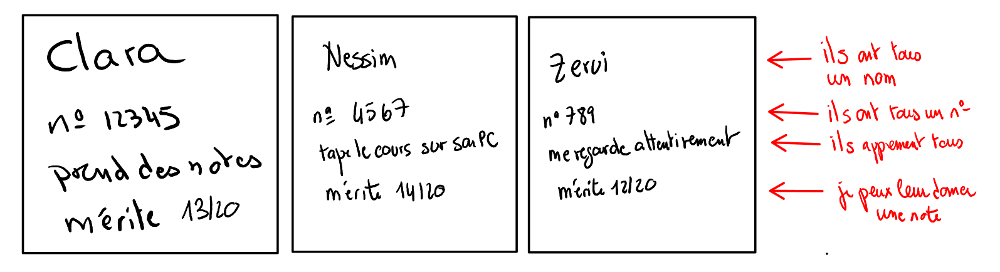
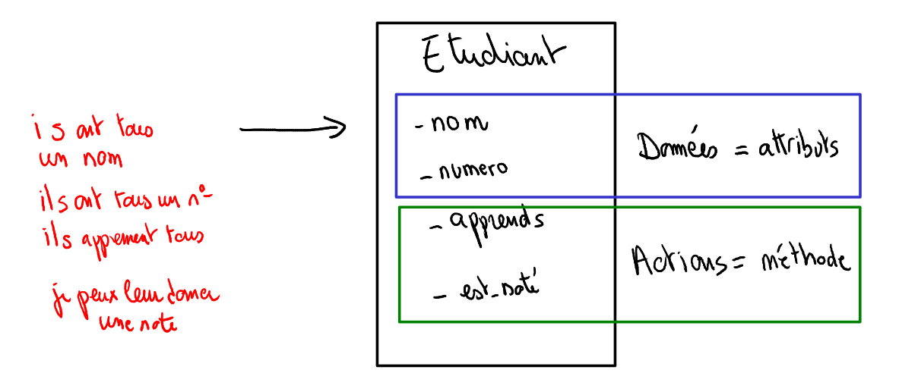
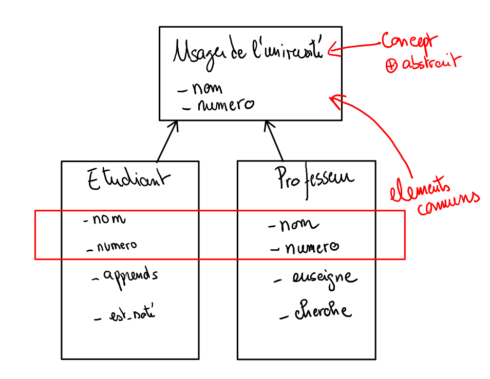

Caractéristiques du langage Java¶
Modèle de typage de Java¶
Java à deux propriétés qui le diffèrencie fortement de Python:
fortement typée: il faut déclarer les variables et leur donner un type
à typage statique: le type d’une variable restera toujours le même pendant sa durée de vie
Exemple python:
j="string" # ici le type de j est déterminé lors de l'affectation
for i in range(0,10): #ici i est utilisée sans avoir été déclarée
j=i*2 #ici j est affectée sans avoir été déclarée
print(j) #j=18
l’équivalent en Java:
int j=0; // ici j est définie comme un entier, il le restera toute sa vie
for(int i=0;i<10;i++){ //ici j est définie comme un entier, il le restera tant qu'on est dans la boucle for
j=i*2;
}
System.out.println(j); //ici on au
Paradigme de programmation JAVA¶
Java est un language de programmation impératif (composé d’instructions) et multi-paradigme (c’est à dire qui supporte différentes façons de coder la même chose):
La programmation orientée Objet: regroupe le code et les données au même endroit dans un concept appellé Classes
La programmation fonctionnelle: considère les opérations comme des suites de fonctions dont les sorties sont les entrées d’autres fonctions
Reactif: les flux de données peuvent être traités de façon séquentielle et en temps réel par rapport à leur utilisation
Les caractéristiques communes des étudiants¶
Les classes permettent de structurer vos programmes de la même façon que votre cerveau appréhende le monde existant. Lorsque je vois un groupe d’étudiant, mon cerveau, instinctivement comprends que ceux-ci ont des caractéristiques communes (comme tous les étudiants):
ils ont tous un numéro étudiants
ils peuvent apprendre
en temps qu’enseignant je peux leur donner des notes

Naissance de la classe des étudiants¶
Je regroupe toutes les caractéristiques des étudiants, sous forme d’un concept abstrait appellé classe

Une classe comporte 2 types d’information:
les attributs (les données, des variables qui sont propres à chaque objet)
les méthodes (le code exécuté, qui est exécuté de la même manière pour chaque étudiant)
Abstraction supplémentaire avec les professeurs¶
Si je vois un collègue enseignant, je sais également qu’il fait parti de la « classe » des enseignants et que je peux le tutoyer, lui demander quels sont ses sujets de recherche et les cours qu’il donne (comme tous les enseignants).
Je vois également qu’un enseignant et qu’un étudiant ont des caractéristiques communes: ils ont tous les deux un num et un numéro d’identifiant dans l’université

On voit donc qu’il exsite un concept plus abstrait dans notre modèle Usager de l'université qui regroupes les caractéristiques communes des deux classes.